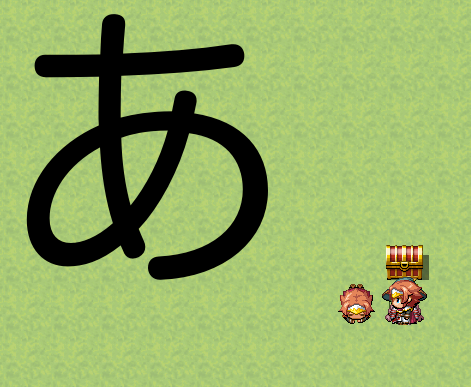
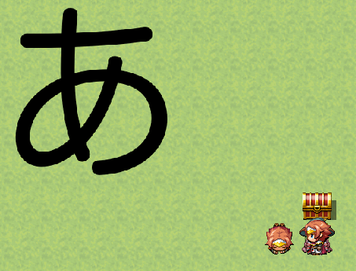
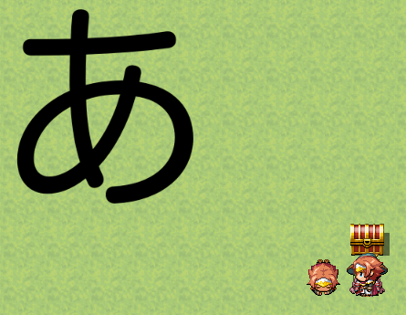

loadBitmapを使うときはsmoothに注意する
画像をスクリプトから読み込むときにImageManager.loadBitmapを使う。
これを使って、画像を表示するには以下のようなコードをスクリプトコマンドから実行すれば良い。
var bitmap = ImageManager.loadBitmap("img/sample/", "a");
var sprite = new Sprite(bitmap);
SceneManager._scene.addChild(sprite);

ここで、例えば、画像を80%で表示するとする。そういうときは、spriteのscaleをいじれば良い。
しかし、このままだと縮小された画像にジャギーが発生する。以下のコードと画像を参照。
var bitmap = ImageManager.loadBitmap("img/sample/", "a");
var sprite = new Sprite(bitmap);
sprite.scale.x = 0.8;
sprite.scale.y = 0.8;
SceneManager._scene.addChild(sprite);

これを抑止するには、loadBitmapの第４引数(smooth)をtrueにすれば良い。第３引数は色相なので使わなければnull。
以下のようにコードを変更すれば、ジャギーなく表示できる。
var bitmap = ImageManager.loadBitmap("img/sample/", "a", null, true);
var sprite = new Sprite(bitmap);
sprite.scale.x = 0.8;
sprite.scale.y = 0.8;
SceneManager._scene.addChild(sprite);

ちなみに、内部的に何が変わるのかという話だけど、Bitmapの以下の箇所で分岐する。
if (this._smooth) {
this._baseTexture.scaleMode = PIXI.SCALE_MODES.LINEAR;
} else {
this._baseTexture.scaleMode = PIXI.SCALE_MODES.NEAREST;
}
PIXIのテクスチャーのscaleModeがLINEARかNEARESTの違い。
多分、バイリニア法かニアレストネイバー法使うかの差っぽい。
それぞれ検索するとどんな感じか出るのでそちらを参照。